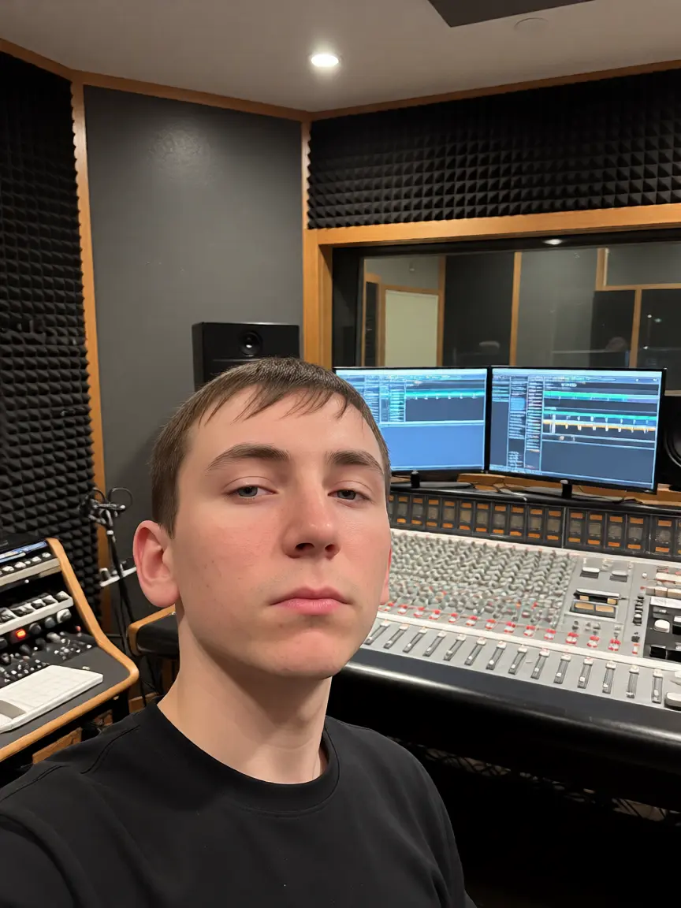

Обо мне

Стремлюсь развиваться в сфере модерации, администрирования контента и операционной поддержки веб-ресурсов.
Обладаю комплексным пониманием того, как устроены современные веб-платформы, интерфейсы и базы данных. Сочетаю навыки работы с текстовым и графическим контентом с базовой технической экспертизой, что позволяет мне эффективно решать задачи на стыке администрирования и UI-дизайна.
- Работа с графикой и UI: Уверенно владею Adobe Photoshop и Clip Studio Paint на среднем уровне. Самостоятельно разрабатываю дизайн-макеты, баннеры, обложки, а также занимаюсь кастомным оформлением сообществ и страниц.
- Языковая квалификация: Владею английским языком на уровне B1 (Intermediate). Свободно читаю техническую документацию, регламенты и гайды, четко воспринимаю рабочие задачи на слух и готов к ведению текстовой коммуникации.
- Технический бэкграунд: Знание основ Python, JavaScript (Vanilla), PHP и MySQL. Понимаю логику работы серверной части и браузерных расширений. Это позволяет мне быстро осваивать любые внутренние панели управления (CMS), эффективно взаимодействовать с разработчиками и глубже понимать структуру модерируемого контента.
- Личные качества: Высокая внимательность к деталям, грамотность, системный подход к категоризации данных и строгое следование должностным инструкциям.
Обладаю инженерным складом ума и сильной базой в сфере автоматизации рутинных процессов, сбора данных и веб-технологий. Умею проектировать интерфейсы, работать с API и администрировать веб-ресурсы. Быстро осваиваю внутренние CRM-системы и правила модерации.
Кейсы ниже демонстрируют мои навыки, подходящие для работы модератором/оператором сайта и чата. Много опыта работы с контентом, оптимизации модерации, работа с базами данных, наполнением сайтов и оформлением статей. Могу эффективно взаимодействовать с технической поддержкой сайта, понимать логику работы учетных записей, тегов, систем банов и логов. Имею навыки для оформления постов, каналов, групп и баннеров. Есть навык создания грамотных, структурированных текстов. Это позволяет профессионально общаться с пользователями в чатах поддержки, писать понятные инструкции, гайды, правила сообщества и официальные ответы.
Хоть у меня и нет прямого опыта работы модератором или оператором, я надеюсь, что это портфолио убедит вас в моих подходящих навыках для старта в этой сфере.
Примечание: в кейсах очень коротко описаны и показаны скриншоты отдельных примеров работ. Много проектов и описаний функций опущено. Для полного ознакомления смотрите ПОЛНЫЙ ТЕКСТ. Какие-то примеры скриншотов не самые показательные в этом направлении, поэтому лучше прочесть. Но это то, что я могу сейчас показать. Можете сразу посмотреть кейсы, и, если заинтересует что-то, прочесть полный текст. А если не заинтересует, то, скорее всего, и в полном тексте вам ничего не понравится.
Всё по типу Sony Vegas, Blender, FL Studio, Adobe Audition и т. п. программ, в которых я сам разобрался и делал что-то для себя, не пишу в это портфолио.
Телеграмм для связи: @the_dark_night_knight